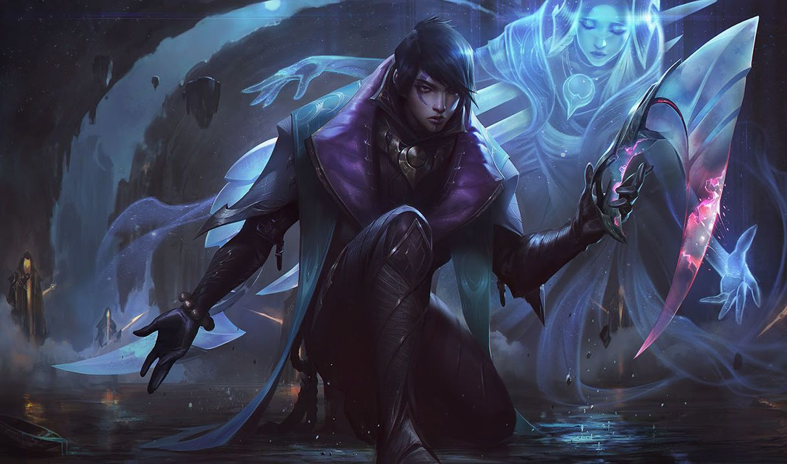
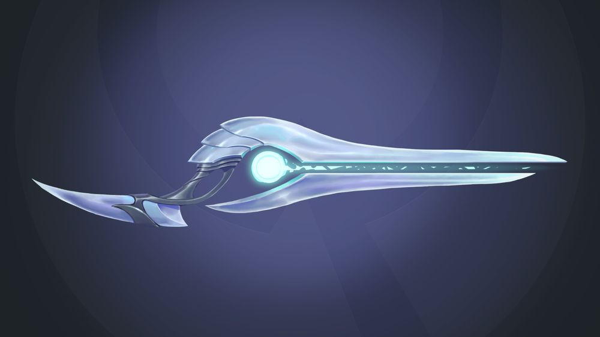
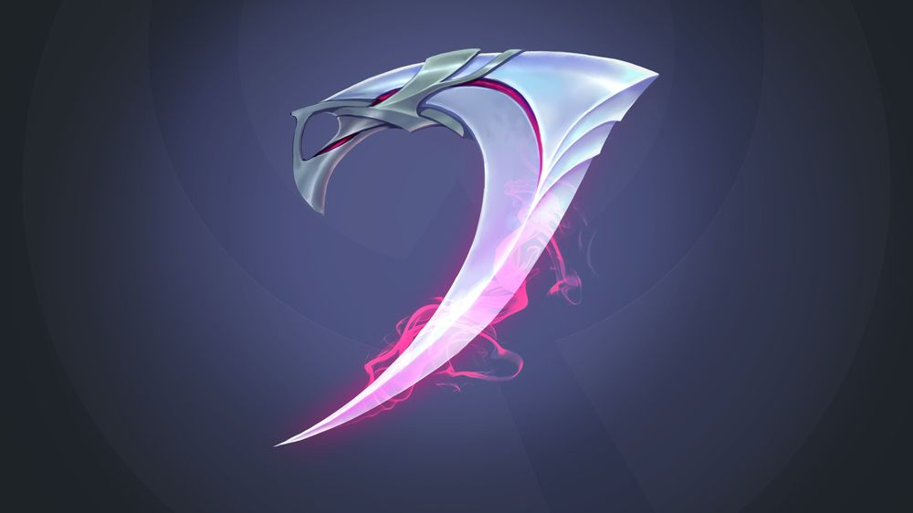
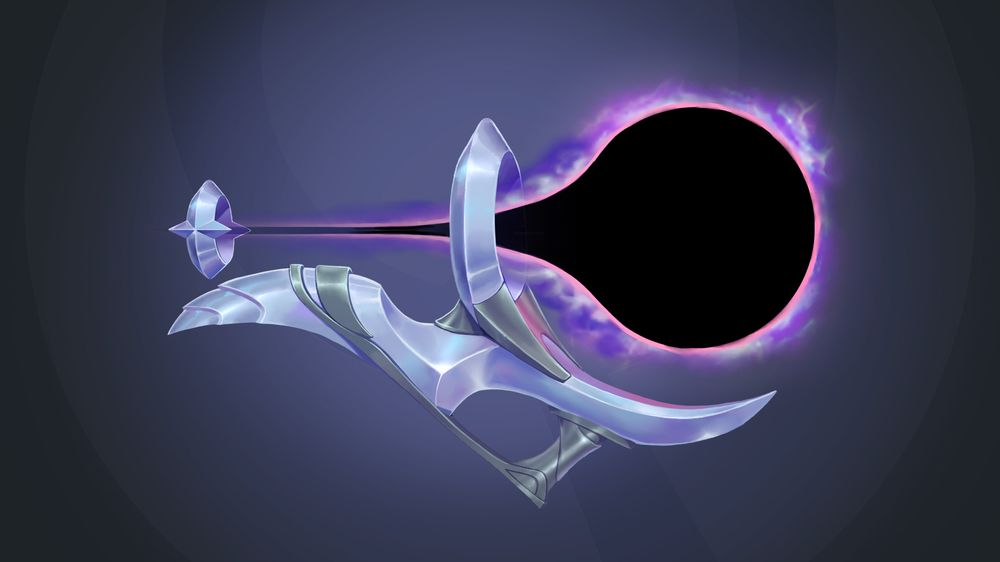
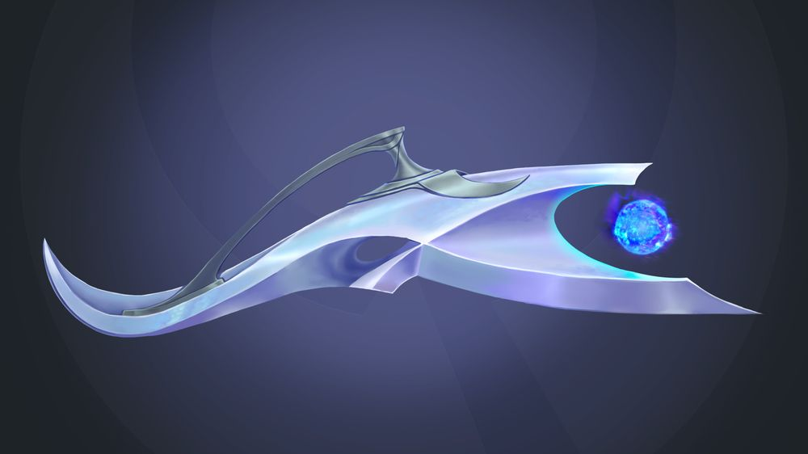
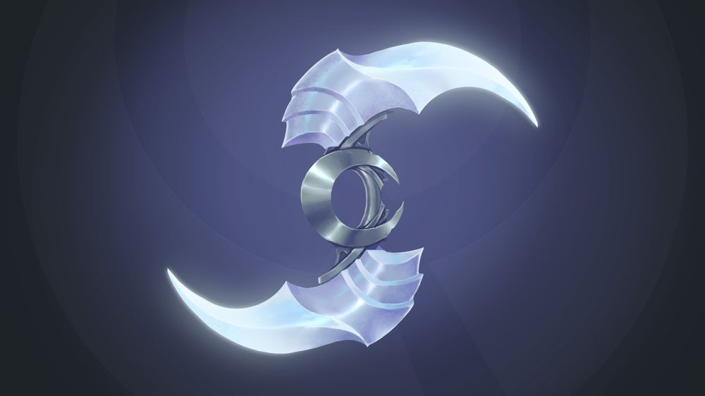

아펠리오스
아펠리오스
아펠리오스, 신념의 무기
Aphelios, the Weapon of the Faithful

1. 배경
2. 스킬
2.1.1. 패시브 - 암살자와 예언자(The Hitman and the Seer)
아펠리오스는 쌍둥이 누이 알룬이 만든 다섯 가지의 루나리 무기를 사용합니다. 한 번에 주 무기와 보조 무기 등 총 두 가지 무기를 사용할 수 있습니다. 각 무기는 고유의 기본 공격과 [Q] 스킬을 가지고 있습니다. 기본 공격과 스킬 사용 시 탄약을 소모하며, 탄약을 모두 소모하면 사용 중인 주 무기를 다음 무기로 교체합니다.
2레벨 도달 시 [Q] 스킬을 사용할 수 있으며 6레벨 도달 시 궁극기를 사용할 수 있습니다. 아펠리오스는 스킬 포인트로 스킬 레벨을 올리는 대신 영구 능력치를 획득합니다.
루나리 무기 순서:[13]
- 만월총 (소총): 사거리 추가
- 절단검 (낫 모양 권총): 생명력 흡수 및 이동 속도 증가
- 중력포 (대포): 둔화 + 이동 불가 효과
- 화염포 (화염 방사기): 광역 피해
- 반월검 (투척 무기): 근거리에서 공격할수록 강력한 피해
2.1.2. 만월총(Calibrum) - 저격소총(Sniper Rifle)
만월총을 사용하는 스킬은 4.5초 동안 대상에게 표식을 남기고 위치를 드러냅니다. 표식이 있는 대상은 먼 거리[17]에서 보조 무기로 공격할 수 있습니다. 대상 공격 시 주변의 모든 표식을 소모하여 표식 1개당 추가 물리 피해를 입힙니다.
보조 무기가 만월총인 경우 주 무기를 사용하여 공격합니다.

2.1.3. 절단검(Severum) - 낫 모양 권총(Scythe Pistol)
보호막은 최대 30초 동안 유지됩니다.

2.1.4. 중력포(Gravitum) - 대포(Gravity Cannon)

2.1.5. 화염포(Infernum) - 화염 방사기(Flamethrower)
광역 피해는 미니언에게 23% / 30%[B]의 피해를 입힙니다.

2.1.6. 반월검(Crescendum) - 투척 무기(Chakram)
반월검을 사용하는 다른 스킬은 반월검 환영[36]을 생성하여 공격 시 각각 추가 피해를 입힙니다.
되돌아오는 속도는 공격 속도에 비례하여 증가합니다.
반월검 환영으로 최초 15% 공격력의 물리 피해를 입히며 이후 반월검 환영이 적중할 때마다 피해량이 감소합니다.[37](최소 피해량: 총 공격력의 5%) 적 챔피언 공격 시[오류] 지속 시간이 초기화됩니다. 치명타가 적용될 수 있습니다.[39]

2.2. 무기 스킬(Weapon Abilites) - 신념의 무기(Weapons of the Faithful)
2.2.1. 만월총 Q - 달빛탄(Moonshot)
2.2.2. 절단검 Q - 맹공(Onslaught)
2.2.3. 중력포 Q - 월식(Eclipse)
장착한 보조 무기 - 중력포: 이 스킬은 아펠리오스의 보조 무기가 사용되지 않습니다.
2.2.4. 화염포 Q - 황혼파(Duskwave)
2.2.5. 반월검 Q - 파수탑(Sentry)
파수탑에는 아펠리오스의 공격 속도[70]와 치명타가 적용됩니다.
2.3. W - 위상 변화(Phase)
2.4. R - 월광포화(Moonlight Vigil)
이후 적중한 모든 챔피언을 주 무기로 공격합니다.
만월총 추가 효과: 이 효과로 남긴 표식은 소모 시 추가 물리 피해를 입힙니다.
절단검 추가 효과: 체력을 회복합니다.
중력포 추가 효과: 둔화 효과가 99%까지 증가합니다. 해당 대상에게 속박의 월식의 속박 효과는 1.35초로 늘어납니다.
화염포 추가 효과: 폭발한 달빛 에너지는 추가 물리 피해를 입히며, 후속 공격[81]은 폭발해 주변[82] 대상들에게 90%의 피해를 입힙니다.[83]
반월검 추가 효과: 반월검 환영 5개를 추가로 소환합니다.
3. 장점
다양한 무기의 특성과 스킬 시너지에서 나오는 막대한 변수
만월총의 긴 사거리와 장거리 변수 창출
절단검의 우수한 유지력 및 전투 지속력
중력포의 최상급 원거리 CC기
화염포의 빠르고 안정적인 라인 클리어와 광역 피해
반월검의 폭발적인 DPS
패시브를 통한 딜링 보정
무기의 변수로 인한 유동적인 라인전 수행 능력 및 잠재력
높은 성장성과 막강한 후반 기대치
4. 단점
복잡한 스킬 메커니즘
경직된 무기 전환으로 인해 필요할 때 원하는 무기를 사용할 수 없음
이 말은 즉슨, 사용자가 무기를 선택하는 개념이 아니라, 임의로 선택된 무기를 사용자가 얼마나 빨리 이해하느냐에 따라 성능이 결정되는 것. 각 무기들은 자신들이 특화된 상황에만 제대로 된 성능을 발휘하는 구조이므로 무기의 상황과 교전 구도에 따라 아펠리오스의 라인전, 한타력은 물론 캐리력도 역시 편차가 심할 수도 있다.
만월총은 긴 사거리를 통한 견제력으로 적을 야금야금 갉아먹을 수 있고 표식을 이용한 폭딜을 활용할 수 있지만 사거리 이점을 보기 힘들고 표식을 활용하기 힘들 때는 일반적인 맞딜 상황에서는 좋다고 보기 어렵다.
반대로 높은 DPS와 근접전에 특화된 절단검과 반월검이지만 포지셔닝을 하기 힘든 상황이나 사거리 차이가 나는 상황에서는 그 장점을 발휘하기 어렵다. 중력포 또한 둔화와 속박을 이용한 갱 호응, 이니시 등 적을 압박하는 플레이는 강력한 편이나 딜링 능력이 강력한 무기라 하기는 힘들고, 반대로 CC기가 절실히 필요한 상황에서 중력포가 없으면 아펠리오스 본인 스스로는 해결할 방법이 없다.
낮은 생존력
불안정한 라인전
높은 성장 의존도
매우 높은 진입장벽

저작물은 CC BY-NC-SA 2.0 KR에 따라 이용할 수 있습니다. (단, 라이선스가 명시된 일부 문서 및 삽화 제외)